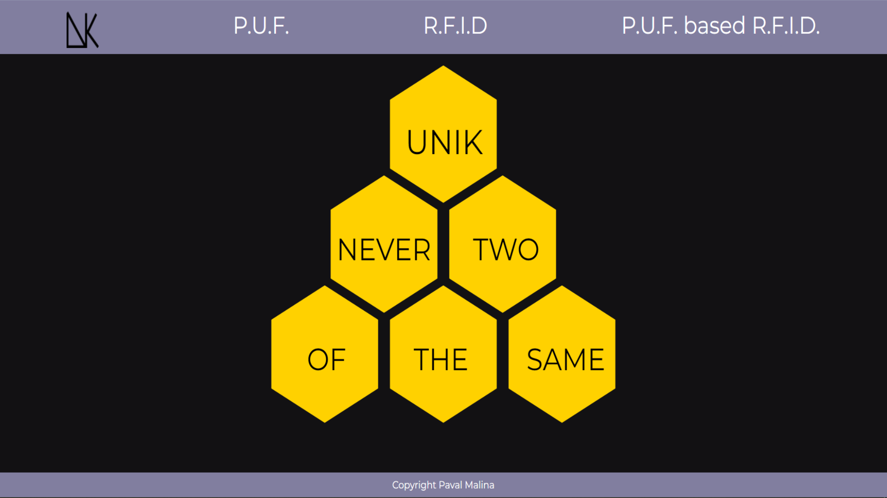
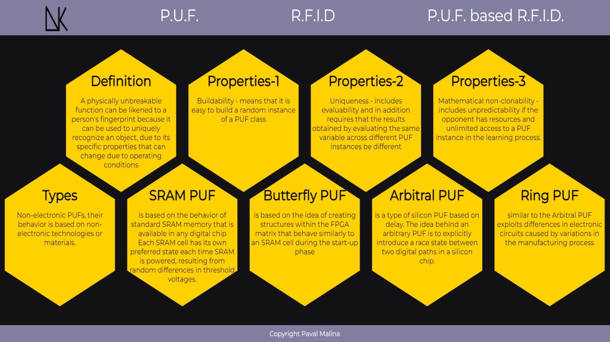
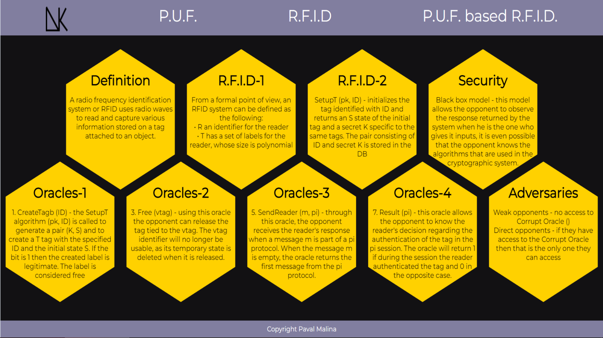
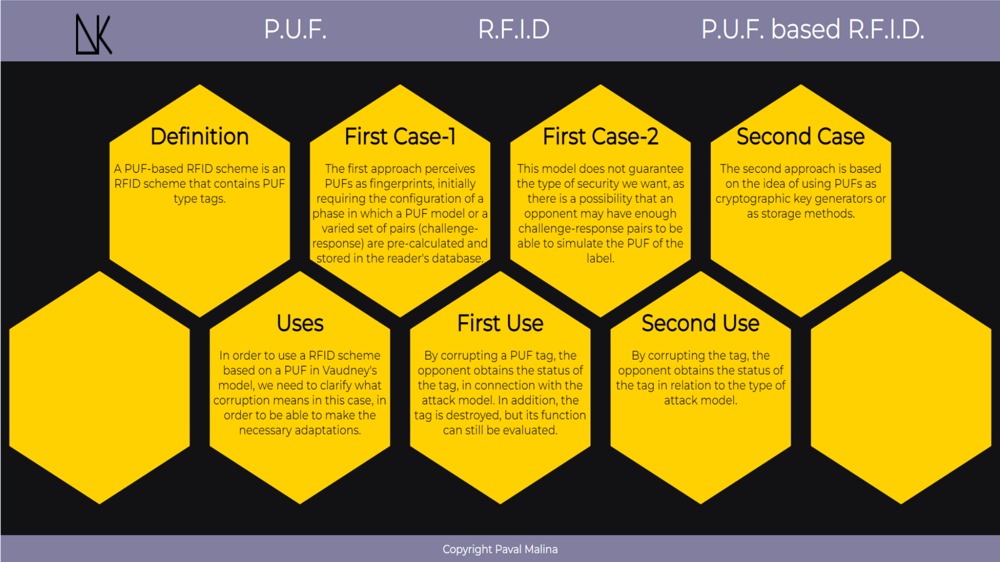
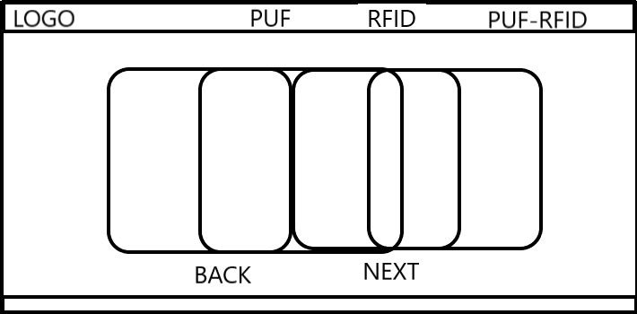
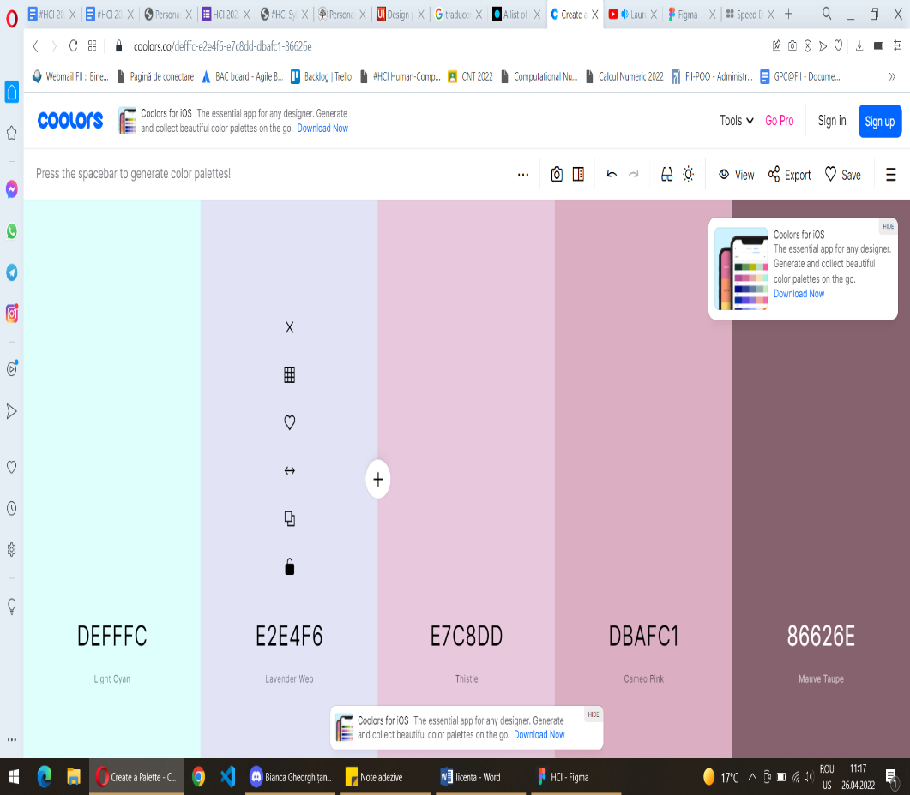
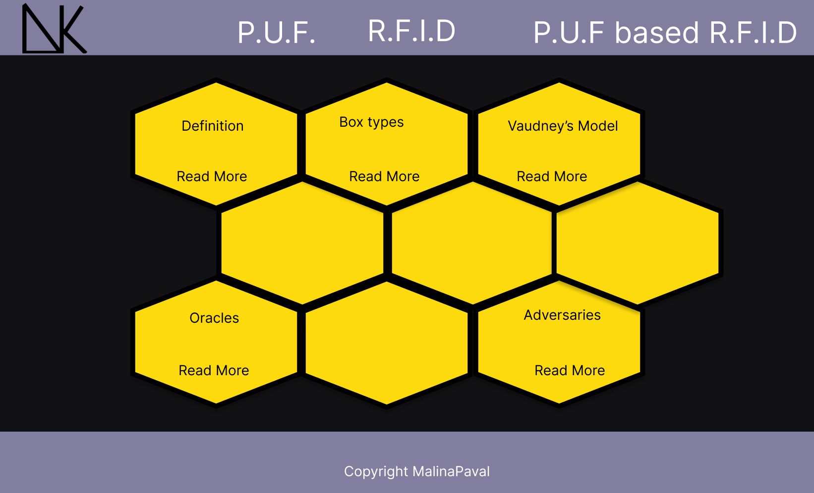

Nowadays with the constant evolution of technology, people have become
lighter targets of online information thieves and card cloning.
2.Introduction
I tried to create a site that will present the basic concept that a
reader will need to study in order to undersand some of the concepts
used to improve online security.
3.Homework's Requirements
For this HCI homework I was supposed to design and implement a graphic
interface for my graduation thesis. My license consists in the analysis
and research of the different methods by which destructive security can
be obtained. I chose to focus on the physically unclonable
functions,also known as PUFs, radio frequency identification systems or
RFIDs and a combination between these two called P.U.F based R.F.I.D.
4.1.Main Page
The main page has a simple design,it doesn't provide any information
about the topic, but in order to get the attention of the reader I
placed a motto in the middle of the page,inside a half of a pyramid
"Never two of the same",hoping that it will arouse curiosity and make
users acces one of the pages that actually contains information about
this topic.Also,the motto summarizes the idea of the PUFs, that we can
not clone an instance. To acces other pages the user only needs to
choose the topic and click it from the navigation-bar.Additionally,I
wanted to give the site a name,so I chose "UNIK", which is the
Norwegian word for "unique". Also when I designed the logo I tried to
recreate the name of the site, using some of the old Norwegian runes.
4.2PUF Page
The page dedicated to the PUF description consists of 9 cards shaped
like a hexagon,each one containing a title and suitable information
for that category.For example the first card from the first row, has
the title "Definition" and presents a basic definiton of the PUF
concept,but when the users hovers over the card it flips and on the
back of it the user can see a more formal definiton of the concept.
The others cards presents the properties of a PUF,types of PUFs and
also the description of some of the most used PUFs.
4.3RFID Page
The page that presents the RFID systems maintains the same design as
the PUF page, 9 hexagonal cards that provide the basic information
that the users need in order to understand this concept. Even though
the design may be the same, there are different information
categories.For example, in order to get acquainted to the topic, a
user needs to understand what an RFID system is made of and also what
are the categories of security models. These kind of information being
presented on the cards.
4.4 PUF based RFID
The last page,dedicated to the combination between PUFs and
RFIDs,follows the same idea of design. In order to understand this
concept of PUF based RFID,a reader must first visit the other two
pages otherwise the chances of him understanding what is being
explained are pretty low.In others words, the page presents
information on when such a combination is best used and what type of
tag corruption exists.
5.Used Technologies
In terms of techologies, I didn't use a framework like Angular or React,
I didn't want to rely on creating components, because I considered that
the site I wanted can be obtained using only Vanilla. As I mentioned
before the design of the application is pretty simple,there are not too
many pages because I still have 2 chapters to finish, and it could be
created using basic HTML and CSS code, I didn't think that I will need
to use extra markups or class attributes to attain a layout.
6.Images from the site

Main Page

PUF Page

RFID Page

PUF based RFID Page
7.Concepts
When I first envisioned how the website will look, I was thinking that I
will have 3 pages one for each of my main concepts, PUF, RFID and PUF
based RFID, and I will be using multiple squared cards to display the
information. My idea was to have the cards stacked on each other, you
press the button next and the first card will grow bigger, cover the
others and presents the information. You press next again and move to
other card. The back button will follow the same idea.

Wireframe
2. I was thinking about using the next color pallet. But I realized that
in my initial design I don’t have that many elements and using all of
these colors and finding a balance between them will be hard.

Color pallet
3. I realized that I need a main page for the application, but didn’t
know exactly what to place on it, so I thought about a motto. Using just
a square for the page was really simple so I needed to rethink a bit my
design. My thesis topic is based on PUFs and they use databases to store
data, so I tried to create a visual metaphor for it and I thought that a
honeycomb kind of resemblance the idea, it’s a compact structure in
nature used to store the honey, so I redesigned the cards to be
hexagonal. This is the idea for the main page. I also changed the color
pallet from 5 in the beginning to three now. Firstly I was thinking
about a combination of green shades, because I read that it’s a color
that stimulates growth and concentration, but after I thought about the
honeycomb idea I changed the colors to yellow, black and a shade of
purple to create contrast between the content and the navigation bar and
the footer.
4. When I adopted the honeycomb idea, I thought I will shape the cards
to resemblance one. Later when I added the whole text I realized that
the cards are too small to fit all the info even if I flip them around.
So I decided that I will only create two rows of cards, so I can fit
more information.

Honeycomb design
8.Design Patterns
The first interaction design pattern I will present is bond to
navigation and is represented by the Navigation Tabs. The content of my
thesis can be simply divided in three main topics, this is why I chose
to represent these topics as section of the application and place them
in the navigation bar, so the user can choose anytime another topic to
study. Also, I kept the same structure (order) of the navigation tabs
from page to page, so it will be easier for the user to adapt and the
Navigation Tabs are persistent on all pages that the links lead to.
Another pattern linked to navigation is represented by the Home Link.
The logo of my application is linked to the main page giving the user
the possibility to go back to the begging of the site in case it doesn’t
want to read anymore. Also the home link is presented on all pages.
When it comes to content, I chose to create Cards to display the
information that the user my need from my application. The cards I used
are hexagonal, because I tried to create the idea of a honeycomb.
Additionally I rely on cards to deliver the data, because it’s a fast
way for the user to find what he is interested in. Moreover, using cards
helped me to provide the user with small parts of information at a time,
it’s easier for a user to understand each concept that I presented when
the information is fragmented in small portions.
Moving to another design pattern, linked now to the user’s perception
and memory, I exploited the Pattern Recognition one. I decided to keep
the same design on all pages that presents information, 9 hexagonal
cards placed in the middle that when the user hovers over them will flip
and provide more information about that section, based on the idea that
the user will recognize even from the first page how the cards works. If
he wants to learn more about some of the card’s content he needs to
hover, otherwise he will only see a part of the data and can move on to
another one.
Another design pattern, linked again to the user’s perception and
memory, which concentrates now on the attention is the Reduction
pattern. I tried to keep the design as simple as possible and tried to
create a high contrast between the background that doesn’t provide
information and the cards, so the user’s attention will be drown
immediately to the important area of the site. In general, people are
cognitively lazy, they like to receive the best result with a minimum
effort, that is the reason I didn’t create another type of cards or
others background animations, so the user can focus on exactly what he
wants to learn.
9.Questions,Options,Criteria
1. The first question I thought about when I started to design the
application was how I am going to present the data to the user. Should I
use a classical hierarchy like the one from Wikipedia, all information
being presented in order, one beneath another or should I use something
more intriguing for the user like a card? Even though the use of cards
is pretty common in the websites today I tried to add a bit of
originality in creating them and change their shape to a hexagon, so it
could help me reach the honeycomb resemblance. The cards also enhance
the user experience, no user wants to read all data from a site if it
doesn’t help him in any way, and helped me organize the information in a
hierarchy a bit different from the original one. The data is presented
in order from the first row of cards to the second, each card being
representative for a specific section of the page.
2. Another question was how I am going to organize the navigation.
Should I use a dropdown menu, an accordion menu or just simply use some
navigation tabs? The content of my application can be divided in 3 main
section, each one with a pretty short name so I decided that using
navigation tabs is the idea that suits the site the best, because if I
would have chosen a dropdown menu that I would have placed in the right
corner, my header would not have looked good, it would have seemed
pretty empty.
3. Another question was what colors I should use for the application. I
wanted to use as my base color green, I read that it is a color that
promotes calmness and is also used to represent growth, I was thinking
that my application can promote the information growth. I was going to
use the monochromatic scheme to find others shade of green that will
suit the site. After I came with the idea of the honeycomb I decided to
change the colors and use yellow, it promotes happiness and increases
the attention, black for the background to create contrast and highlight
the cards and for the header and footer to use a shade of purple, but
nothing that will contrast too much with the yellow.